1 notes
1.0.1 Post meeting 5/20
Current goal: map all available predictors from ema, gps, and monthly to txt categories
Decide what warrants a separate txt category. E.G. does risky location need different txt than risky event? More general is probably best here.
Focus only on assuming features that increase lapse risk, and that lapse risk is high
In general, if risk is low, suggest general wellness – do not worry about feature mapped treatments for low risk
Consider context of certain predictor categories. For example, if location AA is increasing risk, likely due to them seeking out additional support during time of need. What would this look like in terms of txt? Maybe suggest increased utilization of AA? Is this separate from increased risk broadly?
1.0.2 FEATURES
— not included but wondering?
#’s living and deceased parents and children
Alcohol Use History questionnaire (age first drink, age drink regularly, age problem, age first quit attempt, number quit attempts, programs or services use in the past to help quit drinking ((long term > 6 mo residental, short term residential, outpatient treatment, individual counseling, group counseling, AA/NA, other)), medication for abtinen, quit ate, days per week drink past 60 mo, drinks per day, days per week heaviest, drinks per dy heaiest)
DSM V checklist
Thoughts:
Difference between risky loc vs alc loc?
difference between neg emotions and stress? I think yes. Sad tired vs angry anxious stressed. But when we ask about stress, it is possible they respond as tired/sad…
| Feature | Source | Support category | response |
|---|---|---|---|
| alcohol available at location | GPS | risky | |
| location to avoid during recovery | GPS | Risky situations | |
| location valence | GPS | pleasant - managing social/celebratory unpleasant/mixed: negative mood |
pleasant, unpleasant, mixed, neutral |
| location variance | GPS | Routine building | |
| Evening out of home | GPS | routine bulilding/risky? | |
| previous drinking location | GPS | risky | |
| risky location | GPS | risky | high, medium, low, no |
| transitory movement | GPS | routine building | |
| AA | GPS | support seeking | |
| airport | GPS | holidays/spec occasions | |
| bar | GPS | risky | |
| cafe | GPS | routine? or social pressure | |
| church | GPS | support seeking | |
| community | GPS | support seeking | |
| errands | GPS | routine | |
| family | GPS | relationships | |
| fitness | GPS | physical health | |
| friends | GPS | relationships or social pressure | |
| healthcare | GPS | physical health or support seeking | |
| home | GPS | routine | |
| library | GPS | routine? | |
| liquor store | GPS | risky | |
| other | GPS | ||
| park | GPS | routine | |
| public drinking space | GPS | risky or social pressure | |
| restuarant | GPS | routine? or social presure | |
| school | GPS | routine | |
| temporary home | GPS | routine | |
| travel | GPS | special occasions | |
| volunteer | GPS | routine | |
| work | GPS | routine | |
| past use | EMA | relapse prevention planning | |
| goal still abstinent | EMA | motivation building | |
| craving | EMA | craving | |
| past risky location | EMA | risky | |
| past stressor | EMA | stress management | |
| past positive event | EMA | general wellness or routine | |
| current feeling valence | EMA | managing emotions | |
| current feeling arousal | EMA | managing emotions | |
| future risky | EMA | risky | |
| future stressor | EMA | stress management | |
| future efficacy | EMA | motivation or relapse prevention | |
| missing ema | EMA | routine? motivation | |
| quality of life: total | Monthly | routine, emotions, stressors | |
| DASS_anxiety | Monthly | managing emotions | |
| DASS_depression | Monthly | managing emotions | |
| DASS_stress | Monthly | managing stress | |
| Percieved soc support_family | Monthly | Managing relationships | |
| percieved soc support_friends | Monthly | Managing relationships | |
| percieved soc support_significant other | Monthly | Managing relationships | |
| abstinence self efficacy: neg affect | Monthly | neg emotions | |
| abstinence self efficacy: positive/social | Monthly | soc pressure/celebrating | |
| abstinence self efficacy: physical | Monthly | physical health | |
| abstinence self efficacy: craving | Monthly | craving | |
| Percieved stress scale: total | Monthly | stress | |
| Penn alc craving: total | Monthly | craving | |
| MAM_10: How many self help meetings NA AA have you attended in past 30 days? | Monthly | seeking support | |
| MAM_ 13: How many days were you in contact or spend time with any family member or friends who are supportive of your recovery in the past 30 days? | Monthly | seeking support / relationships | |
| MAM_14:How many days were you in contact or spent time with any family member or friends who are not supportive of your recovery in the past 30 days? | Monthly | relationships | |
| MAM_15:How many days did you spend much of the time at work, school, or doing volunteer work in the past 30 days? | Monthly | routine | |
| MAM_16: Has your religion or spirituality helped support your recovery in the past 30 days? | Monthly | seeking support | extremely 0 - not at all 4 |
| MAM_17: Have you taken prescribed medication to help maintain abstinence from alcohol in the past 30 days? | Monthly | physical | 0 - Yes; 1 - No |
| MAM_21: How satisfied are you with your progress toward achieving your recovery goals in the past 30 days? | Monthly | motivation | 0 extremely - 4 not at all |
| MAM_22: Is your goal still to remain abstinent in the future? | Monthly | motivation | Yes - 0 ,uncertain - 1, no - 2) |
| MAM_23: In the next 30 days, how confident are you in your ability to be completely abstinent from alcohol? | Monthly | motivation or relapse prevention | 0 Extremely - 4 not at all |
1.1 Support modules
| Module name | Num features | Description | Example |
|---|---|---|---|
| Managing risk | 10 | Focus on increased awareness of triggers, self reflection of supportive/unsupportive actions | Matrix ERS 2B external trigger chart |
| Social/celebratory/special events | 4 | Identification of role of positive emotions/events on relapse risk, abstinence drift, refusal skills | |
| Negative emotions | 6 | Identification and coping with anxiety, depression, anger | RP 18 emotional triggers |
| Routine building | 13 (mostly location type) | Importance of scheduling/staying on track, time management strategies, finding balance | Matrix RP 2 Boredom |
| Seeking Support | 7 | Reflection of what supports have been useful, values based reflections | Importance of sponsors ERA 4A |
| Managing Relationships | 7 | communication skills, coping with guilt, identification of supportive vs non supportive relationships | RP 26 repairing relationships |
| Physical health | 4 | Medication Check ins, reminders to schedule appointments, importance of physical health | RP 17 taking care of yourself |
| Relapse prevention planning | 3 | Review of recent lapse/future lapse situations, planning alternative action, stop and think cards | ERS 6a common challenges in early recovery |
| Motivational enhancement | 5 | Increase motivation for recovery, normalization of dips, exploring recovery definitions | Matrix RP 7 motivation for recovery |
| Craving | 3 | Strategies to reduce, cope, understand craving | ERC 1 C Thought stopping techniques |
| Stress management | 4 | Role of stress in lapse risk, stress reduction activies | RP 20 recognizing stress |
| General wellness | negative shaps? | Gratitude reflection, growth charting, sleep hygiene, exercise | |
Risky situations
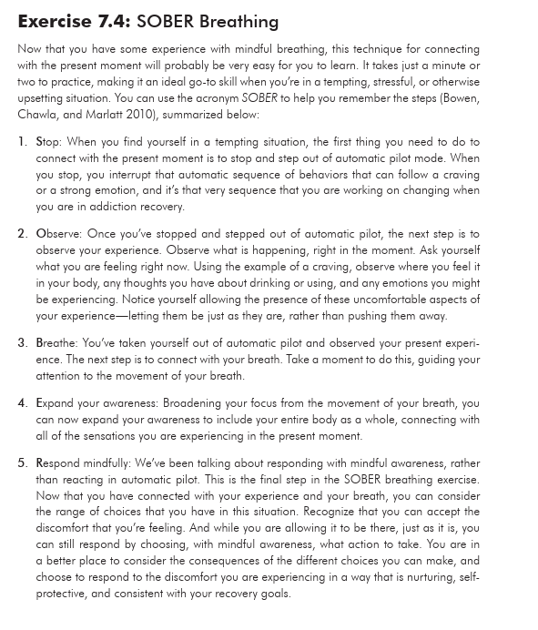
1.2 Motivational enhancement
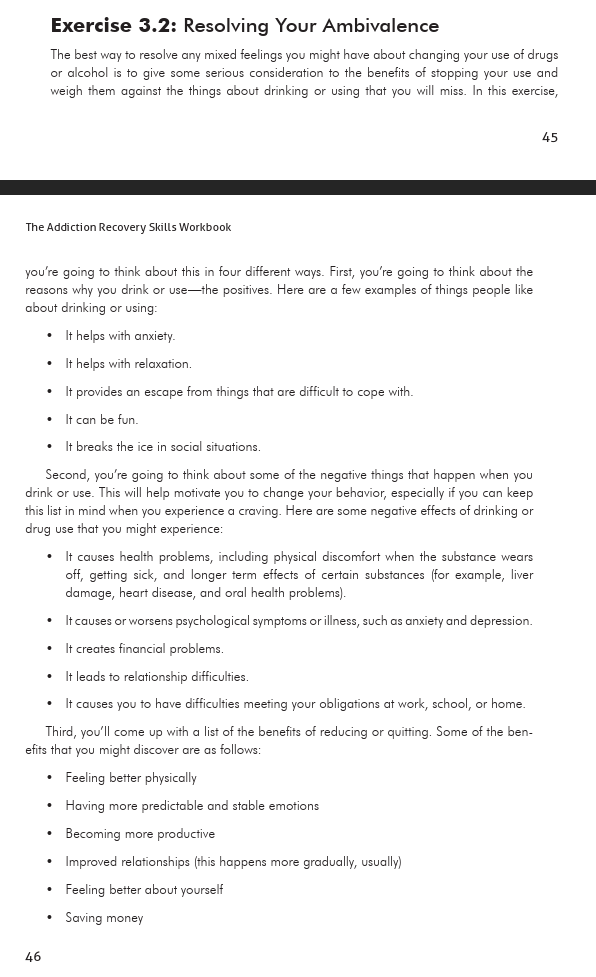
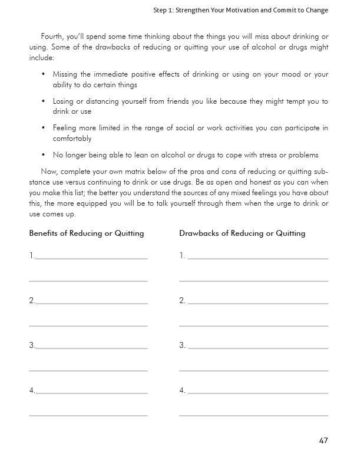
1.3
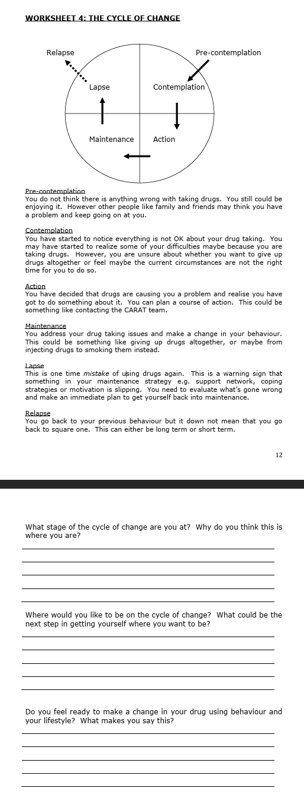
1.4 Managing Relationships
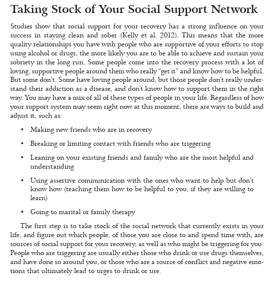
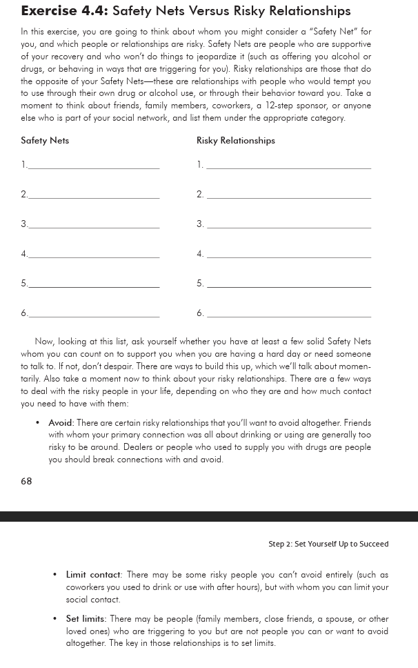
Scheduling/Routine
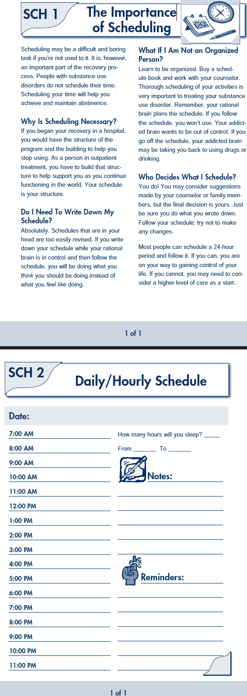
Negative emotions
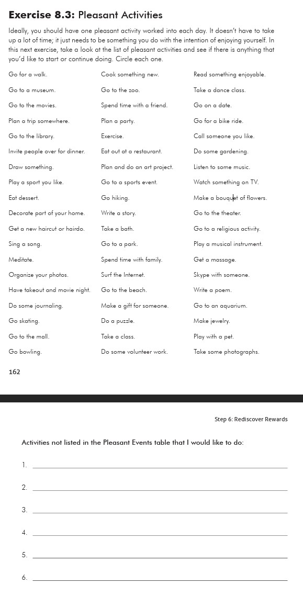
Relapse prevention planning
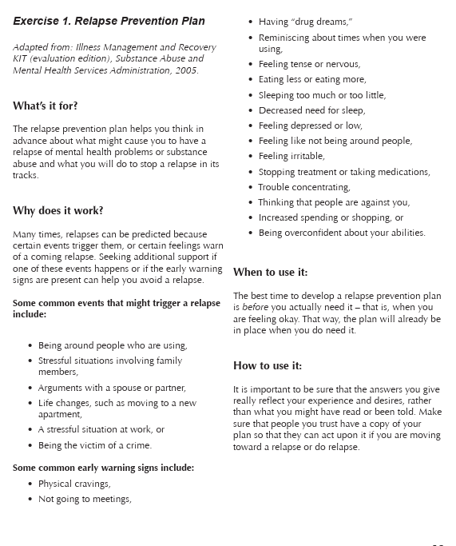
1.5
Stress management
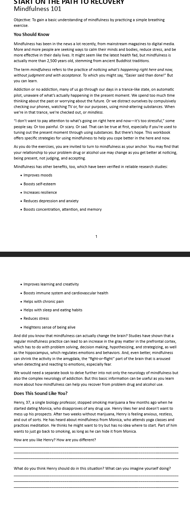
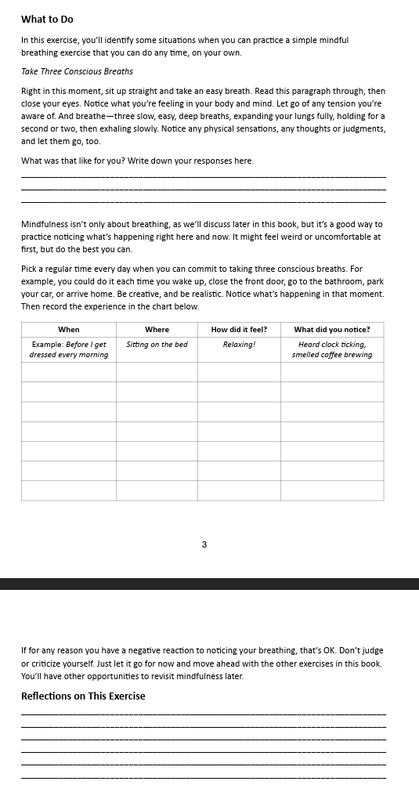
Seeking support
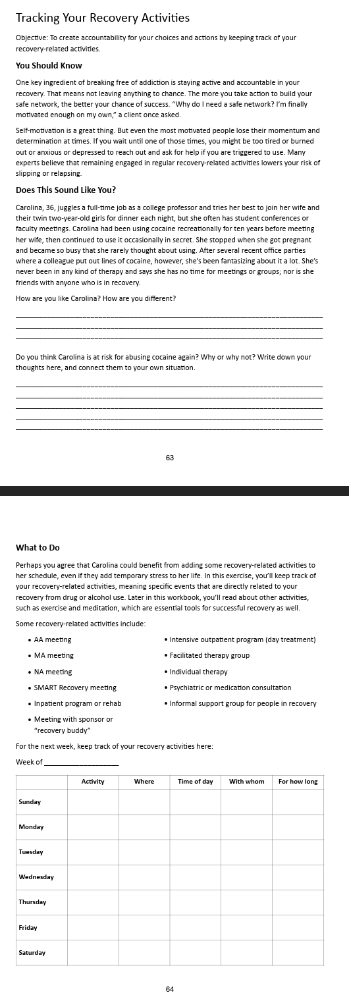
General support/wellness
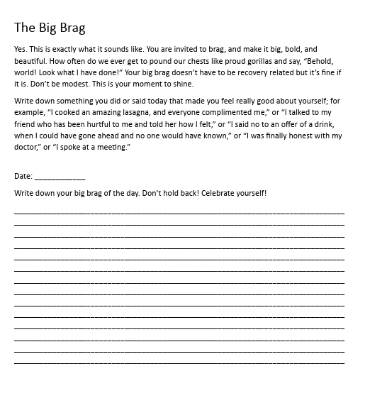
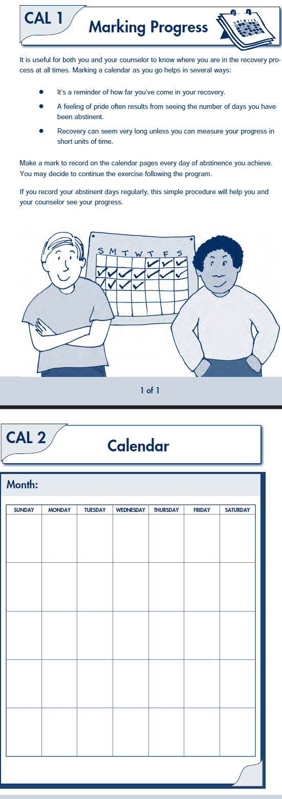
Physical Health
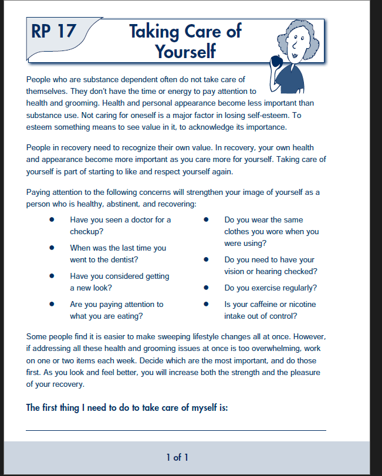
Craving
1.6 Current ideas:
Modules structured around predictor
Addition of one extra module that is general well being focused to represent no important/predictive features
Need to look in data to confirm that no negative/positive direction features are important for lapse risk (modules structured around most predictive features are in expected direction for risk)
Need to GPS predictors to see if this still makes sense
Discuss pros and cons of predictor defined modules vs therapeudic class (e.g. mindfulness, motivation enhancement, urge surfing) defined modules
First time getting a module, recommendation is read module landing page (psychoeducation)
Continuing questions
- Different modules needed for high vs low levels of predictors?
1.7 EMA item structure
This document will describe (in brief) the relevant support modules that could be recommended for each potentially important risk featured (at times sub-divided by lapse probability). There will be a section for each risk feature. Start with risk features based on the EMA items and we can later add features from GPS as those models are trained. Risk features can be organized as second level headings. Third level headings can be used for sub-categories based on lapse probability. The content in each “cell” can be the name of a module and a link to a qmd in the /modules folder that either further describes the support or eventually contains the actual content that would be presented.
2 Questions
High low vs categorical levels of items?
2.1 EMA item 1 Past Use
“Have you drank any alcohol that you have not yet reported)
2.1.1 High lapse probability (only if needed to sub divide)
- Relapse prevention plan
- reach out to support team *Risk assessment
2.1.2 Moderate lapse probability
*Mt Change - normalization of slips
2.1.3 Low lapse probability
2.2 EMA item 1.5 Abstinence
“Is your goal still to remain abstinent in the future?” A: No, uncertain, yes
2.2.1 High lapse probability (only if needed to sub divide)
2.2.2 Moderate lapse probability
2.2.3 Low lapse probability
2.3 EMA item 2 Urge
“…How intense wa your greatest urge to drink alcohol” A 0 - 12, mild, mod, strong
2.3.1 High lapse probability (only if needed to sub divide)
2.3.2 Moderate lapse probability
2.3.3 Low lapse probability
2.4 EMA item 3 Risky situation
“…rate most intense” A 0 - 12, no risks, mild, mod, strong
2.4.1 High lapse probability (only if needed to sub divide)
2.4.2 Moderate lapse probability
2.4.3 Low lapse probability
2.5 EMA item 4 Hassle/stressful event
“…rate most intense” A 0 - 12, no events, mild, mod, strong
2.5.1 High lapse probability (only if needed to sub divide)
2.5.2 Moderate lapse probability
2.5.3 Low lapse probability
2.6 EMA item 5 Pleasant event
“…rate most intense” A 0 - 12, no events, mild, mod, strong
2.6.1 High lapse probability (only if needed to sub divide)
2.6.2 Moderate lapse probability
2.6.3 Low lapse probability
2.7 EMA item 6 Current feeling: Valance
A: 1 unpleasant/unhappy - 11 pleasant/happy
2.7.1 High lapse probability (only if needed to sub divide)
2.7.2 Moderate lapse probability
2.7.3 Low lapse probability
2.8 EMA item 7 Current feeling: Arousal
A: 1 calm/sleepy - 11 aroused/alert
2.8.1 High lapse probability (only if needed to sub divide)
2.8.2 Moderate lapse probability
2.8.3 Low lapse probability
2.9 EMA item 8 Future risky situation in the next week (morning survey only)
A: 1 very unlikely - 11 very likely. very unlikely, unlikely, likely, very likely
2.9.1 High lapse probability (only if needed to sub divide)
2.9.2 Moderate lapse probability
2.9.3 Low lapse probability
2.10 EMA item 9 Future stressfull event in the next week (morning survey only)
A: 1 very unlikely - 11 very likely. very unlikely, unlikely, likely, very likely
2.10.1 High lapse probability (only if needed to sub divide)
2.10.2 Moderate lapse probability
2.10.3 Low lapse probability
2.11 EMA item 10 Future alcohol use in the next week (morning survey only)
A: 1 very unlikely - 11 very likely. very unlikely, unlikely, likely, very likely
2.11.1 High lapse probability (only if needed to sub divide)
2.11.2 Moderate lapse probability
2.11.3 Low lapse probability
3 Theory of RP
Substance use has become the predominant coping response to meeting life’s challenges. Consequently, individuals with a substance use disorder cannot stop using because they lack the skills needed to cope with these challenges. The key to initiating and sustaining abstinence – that is, preventing relapse – is to develop a range of skills to cope with anticipated and potentially unforeseen challenges.
As people accumulate successful recovery experiences, their confidence or self-efficacy in solving life’s problems without substances increases, thereby making it increasingly more likely that they will choose to avoid or be able to cope with high-risk situations.
One assumption in RP models is that individuals are already motivated for abstinence or to reduce their drinking. Thus some evidence-informed clinicians may also use Motivational Interviewing (MI) or Motivational Enhancement Therapy (MET) to address the varying levels of readiness to change that patients might possess when they present to treatment.
3.1 Skill Categories
Building awareness around the potential negative consequences of encountering high-risk situations and thoughts that associate substance use with good outcomes (i.e., it challenges positive expectancies surrounding substance use
Helping the patient to develop and expand their repertoire of coping skills that address specific high-risk situations for relapse (often called “triggers”), whether those situations lead to drug use-related thoughts, feelings, or bodily sensations
- Skills range from techniques to communicate with others when in a risky situation (e.g., how to confidently and comfortably say “no” to a drink if it is offered, called “assertive drink and drug refusal”), to “urge surfing,” a technique to help individuals cope with the intense longings to consume the substance that occurs during cravings
Planning for “emergencies.” That is, unexpected situations where the patient finds themselves suddenly struggling to abstain from drinking or using other drugs
Assessing and reinforcing the patient’s confidence in his/her ability to abstain from substance use, even in the face of challenging situations (e.g., self-efficacy)
Finding alternative ways of thinking about positive thoughts related to substance use, and negative thoughts related to abstinence, sometimes called “cognitive restructuring.” This activity includes discussing the thinking “traps” (sometimes called cognitive distortions, or unhelpful thinking styles) that can develop after years of drinking and using other drugs. See visuals below for examples of how this work might look
3.2 Sample Materials
https://smartrecovery.org/toolbox
https://nowmattersnow.org/learn-skills/
https://www.recoveryanswers.org/resource/relapse-prevention-rp/
Apps – recovery path, sober, I am sober, SMART recovery
3.3 Paid resources currently used in healthcare
Atalan tech: clinican wellbeing prediction used in SSM health https://www.atalantech.com/
Silvercloud/Amwell: https://business.amwell.com/silvercloud-by-amwell?utm_source=silvercloud&utm_medium=website&utm_campaign=us_redirect
- In use at Madison and MKE VAs, specific self guided aud module
3.4 Notes
From lab meeting 12/2
Need to consider optimal size of activity
Possible to break up worksheets into multiple messages
Possible branching of base skills (e.g. relapse drift description) into smaller recommended activities
No assumptions of have/have not completed any other modules
Brainstorm acknowledgement of protective factors